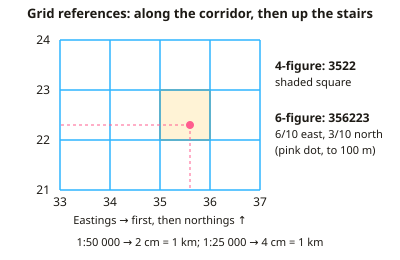

GCSE Geography · Topic 9
Geographical skills
Geographical skills are the tools you use to read maps, draw graphs, and analyse data.
We will practise O S map skills, from grid references to contours and cross sections.
Then we use graphs and maps, numerical and statistical skills, and G I S, satellite images and photographs.
- 4 subtopics
- 268 questions
- Free: 9.1 notes and 10 questions
In this topic
- 9.1Map skills: OS maps, grid references, scale, distance, contours, relief and cross-sectionsFree below · 79 questions
- 9.2Graphical skills: bar, line, pie, scatter, histogram, choropleth, isoline, flow-line and proportional symbol maps, population pyramids and climate graphsOpen in Full Marks · 83 questions
- 9.3Numerical and statistical skills: mean, median, mode, range, interquartile range, percentages, percentage change, ratios and Spearman's rankOpen in Full Marks · 70 questions
- 9.4Using GIS, satellite images, aerial photographs and annotated photo or sketch interpretationOpen in Full Marks · 36 questions
9.1 · Free notes
Map skills: OS maps, grid references, scale, distance, contours, relief and cross-sections

Key points
- Ordnance Survey (OS) maps are drawn to scale. Landranger maps are 1:50 000 (2 cm = 1 km) and Explorer maps are 1:25 000 (4 cm = 1 km). The 1:25 000 map is the larger scale and shows more detail.
- Ratio scale: 1:50 000 means 1 cm on the map is 50 000 cm = 500 m on the ground. Always convert to metres or kilometres and state the units.
- Four-figure grid references give a whole 1 km square. Use the eastings (vertical lines, read along the bottom or top) first, then the northings (horizontal lines, read up the side): 'along the corridor, then up the stairs'. The number is the square's south-west corner.
- Six-figure grid references divide the square into tenths, so they locate a feature to within 100 m. For example, 6/10 across square 35 and 3/10 up square 22 is 356223.
- Measuring distance: use a ruler for straight lines. For winding roads or rivers use the edge of a strip of paper or string, then multiply by the scale. For example, 6.4 cm at 1:50 000 = 6.4 × 500 m = 3.2 km.
- Contours are brown lines joining places of equal height above sea level. The interval is 10 m on Landranger maps and usually 5 m on Explorer maps. Also look for spot heights (black dot) and triangulation pillars (blue triangle with a dot).
- Contour patterns: close together = steep slope, wide apart = gentle slope. Concentric rings show a hill or summit. V-shapes pointing uphill show a valley. V-shapes pointing downhill show a spur. An escarpment has a steep scarp slope and a gentle dip slope.
- Gradient = vertical height gain ÷ horizontal distance, with both in the same units. For example, a rise of 100 m over 2 km (2000 m) is 1/20, or 1 in 20.
- Cross-sections: draw a line between two points, lay the paper edge along it and mark each contour height. Plot the heights on graph paper using a sensible vertical scale and join the points smoothly. Vertical exaggeration = horizontal scale ÷ vertical scale (as denominators).
- Bearings are measured clockwise from grid north with a protractor and written with three figures (e.g. 045°). North = 000°, east = 090°, south = 180°, west = 270°, south-west = 225°.
- Use the map key and symbols (blue = water, brown = contours, green = vegetation/recreation, black = buildings and roads). In extended answers, back up descriptions of relief, settlement site and land use with grid references, heights and distances.
In more detail
- Worked scale: at 1:25 000, 4 cm on the map is 1 km, so 6.4 cm is 1.6 km.
- Worked six-figure grid reference: easting 34 plus 3 tenths → 343; northing 76 plus 8 tenths → 768 → 343768.
- Worked gradient: a rise of 120 m over 1.5 km (1500 m) is 1 : 12.5, about 8%.
- Worked contours: on 1:50 000 OS maps, contours are usually drawn every 10 m.
- Worked direction: a bearing of 135° is south-east.
Practice
Map skills: OS maps, grid references, scale, distance, contours, relief and cross-sections: 10 questions
Pick an answer to check it, or open the answer for the explanation.
1. On a 1:50 000 OS map, what distance on the ground does 1 cm represent?
- 50 km
- 5 km
- 500 m
- 50 m
Show answer
C: 500 m. 1 cm × 50 000 = 50 000 cm = 500 m. So 2 cm = 1 km, which is why a 1 km grid square is 2 cm wide on a Landranger map.
2. A wood lies in the grid square whose south-west corner is where easting line 43 meets northing line 87. What is its four-figure grid reference?
- 4378
- 4387
- 3487
- 8743
Show answer
B: 4387. Eastings (along) come first, then northings (up): 43 then 87 gives 4387. 8743 reverses the order.
3. Two villages are 7.5 cm apart in a straight line on a 1:25 000 map. What is the real distance between them?
- 18.75 km
- 187.5 m
- 3.75 km
- 1.875 km
Show answer
D: 1.875 km. At 1:25 000, 1 cm = 250 m, so 7.5 × 250 = 1875 m = 1.875 km.
4. On an OS map, contours are very close together on the east side of a hill and widely spaced on the west side. What does this show?
- The hill is higher on the west
- Both sides have the same gradient
- East side gentle, west side steep
- East side steep, west side gentle
Show answer
D: East side steep, west side gentle. Closely spaced contours mean height changes quickly over a short distance, which is a steep slope. Widely spaced contours show a gentle slope.
5. A trig point is 0.7 of the way across grid square 41 52 (easting 41, northing 52) and 0.4 of the way up it. What is its six-figure reference?
- 417524
- 524417
- 414527
- 415247
Show answer
A: 417524. Easting: 41 then 7 tenths = 417. Northing: 52 then 4 tenths = 524. Eastings always come first, giving 417524.
6. A cross-section has a horizontal scale of 1:50 000 and a vertical scale of 1:10 000. What is the vertical exaggeration?
- ×40 000
- ×0.2
- ×5
- ×50
Show answer
C: ×5. Vertical exaggeration = 50 000 ÷ 10 000 = ×5. Slopes look five times steeper than they really are.
7. The land rises from 120 m to 220 m over a horizontal distance of 2 km. What is the average gradient?
- 1 in 200
- 1 in 20
- 1 in 10
- 1 in 2
Show answer
B: 1 in 20. Gradient = height gained ÷ distance = 100 m ÷ 2000 m = 1/20, or 1 in 20. Both measurements must be in the same units.
8. What is the normal contour interval on an OS Landranger 1:50 000 map?
- 10 m
- 5 m
- 25 m
- 50 m
Show answer
A: 10 m. Landranger maps use 10 m contour intervals. Explorer 1:25 000 maps usually use 5 m in lowland areas.
9. Town B lies due south-west of town A. What is the bearing of B from A?
- 315°
- 045°
- 135°
- 225°
Show answer
D: 225°. Bearings are measured clockwise from grid north. North = 000°, east = 090°, south = 180°, so south-west = 225°.
10. On an OS map, V-shaped contours point towards higher ground and a blue river line runs along the middle of the V. Which landform is shown?
- A river valley
- A cliff
- A summit
- A spur
Show answer
A: A river valley. V-shaped contours pointing uphill (upstream) show a valley. On a spur the V-shapes point downhill, towards lower ground.
Keep going in Full Marks
Full Marks has 79 questions on Map skills: OS maps, grid references, scale, distance, contours, relief and cross-sections (69 more than here), set out in practice levels. You also get notes and 3D models for all 4 subtopics of Geographical skills, plus games, timed exams and past papers.